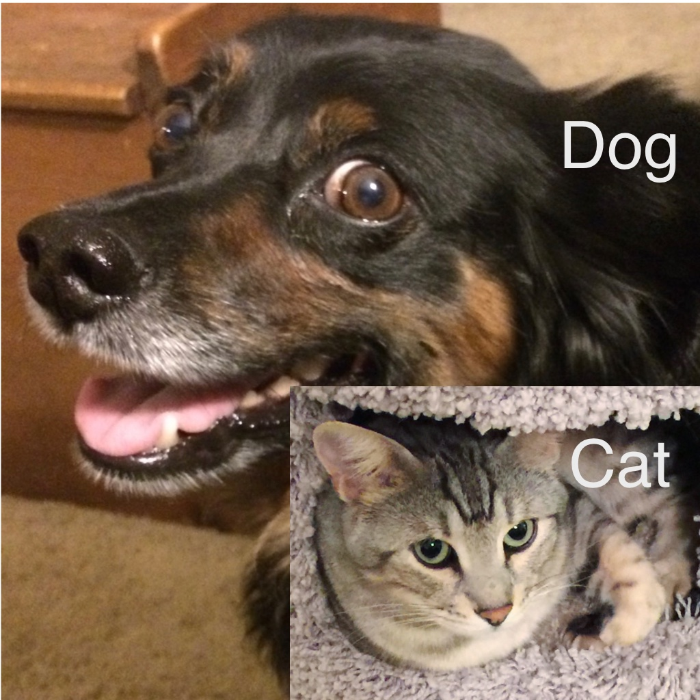

{% block project %}
<div class="col s12 m10 right">
  <div class="card ">
      <span class="card-title deep-orange-text fa-regular right">Cat and Dog Image Classification</span>
      <div class="card horizontal left valign-wrapper">
        <div class="card-image">
          
        </div>
        <div class="card-stacked">
          <div class="card-content">
              <p class="blue-grey-text fa-thin">
                  The goal of this project is to implement image classification using neural network. In this fun project I created a neural network model that takes an image of a cat or a dog as the input and identifies them correctly. Classification like this, with a high level of accuracy, is not an easy task using traditional image processing techniques like PCA, Morphological operations etc. However, neural networks makes image classification results much more reliable. <br><br>
                  To develop this model I implemented Transfer Learning by using convolutional and adaptive pool layer of Resnet-18 model and adding a sequential layer of feed forward neural network to predict the binary classes.
                  To train this model I used microsoft's Cat and Dog dataset.
                  <br><br>
                  I also integrated the model with this website. Therefore, you can upload an image of a Cat or a Dog and the model will identify the image and tell you the correct pet. Since this model is just trained on Cat and Dog, it will not be able to classify images of other animals.

                </p>
          </div>
          <div class="card-action">
            <a href="https://github.com/rachiteagles/CatNDog" >Show More</a>
            <a href="/catNdog_demo" class ='right'>Demo</a>
            
            
          </div>
        </div>
      </div>
    </div>
</div>
{% endblock %}